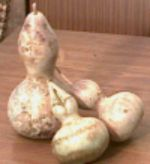
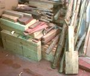
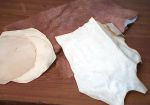
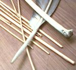
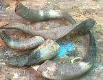
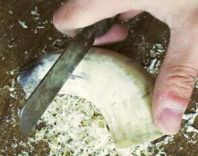
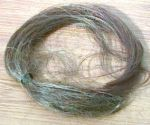

| |
 La
naturaleza es la fuente de todos los materiales empleados en la construcción
de los instrumentos musicales, vegetales en su mayoría, algunas
veces animales y en en menor medida de origen mineral. Pero, las más
de las veces, no pueden ser empleados tal y como se extraen, debiendo
ser sometidos a uns serie de procesos de adaptación y acondicionamiento.
De la manera en que éstos se lleven a cabo, dependerá en
gran medida la calidad del futuro instrumento musical. La
naturaleza es la fuente de todos los materiales empleados en la construcción
de los instrumentos musicales, vegetales en su mayoría, algunas
veces animales y en en menor medida de origen mineral. Pero, las más
de las veces, no pueden ser empleados tal y como se extraen, debiendo
ser sometidos a uns serie de procesos de adaptación y acondicionamiento.
De la manera en que éstos se lleven a cabo, dependerá en
gran medida la calidad del futuro instrumento musical.
Antiguamente
y aún hoy en muchos casos, eran los porpios constructores los que
extraían y trataban los materiales que ivan a emplear, siguiendo
técnicas transmitidas tradicionalmente de generación en
generación. En la actualidad, mucos de estos materiales pueden
ser adquiridos en el mercado, dispuestos ya para su empleo o en un grado
avanzado del proceso, pero otros deberemos ser nosotros mismos quienes
los preparemos.
También
puedes ver una sección dedicada a las COLAS
y PEGAMENTOS.
La
Madera
Existen
numerosas expecies de árboles y arbustos que tradicionalmente proporcionan
la madera empleada en la construcción de los instrumentos musicales.
Según sea su calidad o dureza, se seleccionará para unos
u otros. Así, la madera dura, como roble, encina o boj se utiliza
en la construcción de aerófonos (flautas, dulzainas, etc.)
o idíofonos percutidos (tejoletas, castañuelas), mientras
que la más blanda, como el pino o arce se reserva para los corófonos
(rabel, guitarrra).
Por
desgracia, muchas de las especies antiguamente empleadas son en la actualidad
escasas, y en ocasiones se encuentran en peligro de extinción.
Por ello recomendamos no cortar directamente la madera, ateniéndonos
a aquella que se encuentra en el mercado o, de no ser así, asegurarnos
de que no cometemos un atentado ecológico.
Tradicionalmente
se sitúa la época idonea para el corte de madera en los
meses de enero y febrero, durante la fase lunar de cuarto menguante o
luna nueva. recordemos el refrán: "En menguante y en enero,
corta tu madero". Ello es fácilmente comprensible teniendo
en cuenta que esta época invernal es la de menor actividad biológica;
siendo mínima la circulación de la savia, la madera estará
poco empapada y habrá menos peligro de que se agriete durante el
secado. No está clara la influencia de la luna, aunque parece ser
que en las fases indicadas los vegetales presentan aún menor actividad.
La
madera ha de dejarse secar en un lugar ligeramente húmedo y algo
caliente; se solía introducir entre la paja o el estiércol
de los establos y graneros, en donde permanecía un tiempo de al
menos, un año. El secado lento evitará también las
grietas provocadas por la eliminación rápida de la savia,
quedando como bloques compactos. Nunca debe dejarse secar al sol.
Como
conseguirla: Hay
muchos almacenes de madera donde venden maderas de distintos tipos, suelen
suministrar a carpinterías, venden tablones grandes por metros cúbicos
pero en muchos sitios los cortan en trozos más pequeños para poder llevarlo.
Salen más baratos que en carpinterías, donde suelen tener lo que ellos
usan, pino, castaño etc. . En los almacenes de bricolaje, salvo excepciones,
suelen tener poca madera y de mala calidad. Hay almacenes especializados
en madera para instrumentos, yo conozco alguno en Valencia.
Nota.
Con el tiempo haremos un listado de establecimientos especializados.
Piel
y Vejiga
Existen
diversos métodos de tratamiento de la piel, según el estado
final que queramos obtener. Nosotros vamos a emplear preferentemente la
piel sobada, que presenta un aspecto rígido y duro, pero que se
vuelve elástica y blanda al ser introducida en agua durante un
cierto tiempo.
Para
conseguirla, quitaremos la piel al animal muerto, con cuidado de no dejar
agujeros; por la parte interior se cubre bien de sal y se dobla sobre
sí misma, prensandola bien, para evitar que queden bolsas de aire.
Se deja así durante, al menos, quince dias. El pelo o la lana se
irá cayendo a media que la piel seque. Puede untarse también
con aceite. Al cabo de ese tiempo se lava bien, preferentemente en agua
salada y tibia y se retuerce en todas direcciones (com quien lava ropa)
para romper los nervios; adquiere entonces un aspecto blanquecino. Se
dejará secar durante uno o dos días, y posteriormente se
frotará con un palo o herramienta plana por la parte interior,
para que se desprendan los posibles trozos de carne aún adheridos;
luego se vuelve a estirar en todas direcciones. Se lava una vez más
en agua salada y se deja secar bien extendida. Para utilizarla, cuando
vayamos a colocarla sobre algún pandero o zambomba, es necesario
introducirla durante uno o dos dias en agua con sal, para que adquiera
flexibilidad y nos permita manejarla con facilidad. Pieles de este tipo
ya preparadas, pueden adquirirse en tiendas de música, pues se
emplean como parches de tambores.
Otra
forma de preparar las pieles es limpiarlas bien de carne y meterlas dos
o tres dias en agua mezclada con ceniza de madera (Mejor de encina o roble
que tiene mas taninos, el pelo se caerá , luego se lava y se tiende
extendida a secar, éste método no ,lo he probado pero me
aseguran que funciona, lo probaré. Además si se añade
un poco de cal viva, el pelo se desprende mejor.
Si
deseamos curtir la piel, o sea que se transforme en cuero, el proceso
es más complejo y largo, y en él intervienen sustancias
curtientes como el tanino.
La
vejiga, especialmente la de cerdo, es empleada en muchas ocasiones de
forma semejante a la piel sobada (parches de zambomba, etc.), aunque es
más frágil y delgada. Su preparación es sencilla.
Por el orificio de la vejiga recién extraída introduciremos
un canuto delgado de caña u otro material, y soplando por él
la hincharemos cuanto sea posible. Frotaremos bien contra una superficie
lisa, con el fin de que se estire lo más posible, y sin deshincharla
la dejaremos secar durante unos dias.
Como
conseguirla: La
piel en algunas tiendas de música para parches de tambor, algunas de curtidos(muy
pocas, se llama piel apergaminada), y en material para encuadernación,
pero sólo en comercios muy especializados suelen vender las pieles por
piezas enteras. Son caras. La vejiga, no queda más remedio que esperar
a la matanza.
Nota. Con
el tiempo haremos un listado de establecimientos especializados.
En
el caso de poder cortar directamente la caña, bambú o los
carrizos que proliferan en las riberas de nuestros ríos, los dejaremos
secar, hasta que su color sea amarillo brillante, sin tonos verdosos.
No requeriendo hambientes especiales, aunque es recomendable que no le
de el sol directamente y que no se moje, pues corremos el riesgo de que
enmohezca. Cuando esté bien amarilla, cortaremos las longitudes
adecuadas que vayamos a emplear y las tostaremosligeramente, colocandolas
directamente sobre el fuego, pero girandolas y moviéndolas continuamente,
pues sin no se quemarán; esto hace que pierdan el
agua que aún conserven y les confiere un color marronáceo
muy ornamental, a la vez que aumentan su dureza. También se pueden
untar bien con aceite de oliva, dejandolas a continuación escurrir
un día.
Los
tallos y cereales de centeno o de avena salvaje deben recogerse en verano,
cuando estén bien amarillos y secos, cortándolos, a ser
posible, de nudo a nudo, en un día soleado, seco y teniendo en
cuenta que no haya llovido en fechas próximas.
Como
conseguirlos:
Cañas:
En las orillas de los ríos y lagunas suele haber, si no palos de escoba
que aún pueden encontrarse. Hay alguna empresa que se dedica a preparar
caña para lengüetas de instrumentos.
Cereales.
En campos en verano, a las orillas de las carreteras, procurar arrancarlo
desde abajo, con la raíz.

C
u e r n o
La
parte del cuerno que nos será más útil es el recubrimiento
óseo, desechando el cartílago adherido en su interior. Para
separarlos procederemos de la siguiente manera: cortaremos la base del
cuerno,
a una altura en
que no haya restos de pelo o carne; cuando el cuerno sea pequeño
y especialmente si es de cabra, basta con darle un golpe seco para que
el cartílago se despegue y salga despedido. De no ser así,
es necesario hervirlo en agua durante un tiempo que variará según
el tamaño (aproximadamente, una media hora), con lo que el cuerno
se vaciara fácilmente.
Hecho
esto, se sumerge durante unas horas en agua con lejía, lo que hará
que los restos
de carne se desprendan a la vez que adquiere brillo y se desinfecta. La
superficie exterior del cuerno puede ser pulida mediante lijas finas y
ceniza pulverizada, espolvoreada sobre una bayeta. También se puede
raspar con una navaja o pedazo de cristal.
Como
conseguirla: Con
lo de las vacas locas cada vez es más difícil, si no tienes conocidos
en el mundo de la ganadería, antes era muy fácil y en cualquier matadero
te los daban o vendían, Ahora como tiene que quemar todos los despojos
está difícil. Hay que buscar por los pueblos.
C
r i n
La
crin, o más propiamente las cerdas de cola de caballo, se emplea casi
exclusivamente para los arcos de los rabeles e instrumentos semejantes,
así como para las cuerdas de algunos de ellos. Tensas, en haces sobre
los arcos e impregnados en resina o colofonia, a veces con pez resinosa
o con viruta de pino (también con un alto contenido en resina), le proporciona
la ‘aspereza’ necesaria para friccionar sobre las cuerdas y provocar el
sonido. También varias crines juntas se emplean como cuerdas en los rabeles,
por ejemplo los sanabreses y algunos purriegos (ver
artículo) según el número se
pueden conseguir
cuerdas mas graves o agudas. El sonido producido es suave y profundo,
muy agradable e ideal para acompañar romances y canciones lentas.
Se
suele preferir las procedentes del caballo macho, ya que, según la tradición,
las de yegua están mas orinadas y se vuelven más frágiles y quebradizas.
Son mejores las cerdas finas que las gruesas, pues también son más suaves,
y hay quien prefiere las morenas a las rubias, pues aquellas son más resistentes,
aunque en esto hay discrepancias. Yo personalmente las uso ambas, eso
si procurando no mezclarlas.
COMO
CONSEGUIRLAS: No queda más remedio que buscar alguien que tenga animales
y nos dé algunas, no suele ser difícil encontrarlo, de hecho a los caballos
se les corta en ocasiones el pelo de la cola.
En
caso de no disponer de crines, se puede sustituir por sedal de pescar,
pero del mas fino,de 0,20 mm. de
diámetro, puede dar buen resultado y es fácil de conseguir y barato. También,
por supuesto por cerdas de arco de violín, aunque suelen ser mas caras
y no en todas las tiendas de música las podemos encontrar.
Hueso
El
hueso animal es un excelente material para piezas duras y algunos instrumentos
completos, así como para piezas de decoración e incrustaciones. Podemos
emplear huesos de la patas de ovejas o cabras para flautas o hueseras
y los de cerdos, vaca o caballo para obtener piezas más grandes o de
decoración como cordales o puentes de rabel u otros instrumentos de
cuerda, y cualquier otro tipo de pieza que deba de ser dura. ( Muchas
boquillas de pitos de tres agujeros son de éste material) pero hay que
tener encuentra que a pesar de su dureza es frágil, es decir que puede
romperse, no es nada flexible.
Preparación:
Se ha de limpiar de restos de carne y grasa, para ello se hierve con
agua durante media hora, a continuación se deja enfriar y con un cuchillo
se separan los restos blandos.
- Una vez limpio se lava bien y se deja secar, es conveniente dejarlo
unos al sol en verano para que blanquee y se seque bien. (Cuidado con
los perros y los gatos que se los llevan)
- Por último se introduce en un recipiente con agua y agua oxigenada
( aprox. ¼ lt. De oxigenada a 80 vol. por cada lt. de agua) y amoniaco,1/4
de lt. para disolver la grasa, se deja un día o dos, si vemos que sale
mucha espuma lo quitaremos antes, pues puede atacar al hueso mas de
la cuenta), con esto se eliminan los pocos restos de carne y blanquearlo
aún más.
- Lo aclaramos con abundante agua y lo dejamos secar.
Como
conseguirlo: Pidiéndoselos al carnicero, También podemos utilizar
los que sobran de las comidas, los huesos de cocido suelen estar muy
bien (después del cocido claro). Yo, para hueseras y flautas, cada vez
que voy a comprar una pierna de cordero procuro que no le den los machetazos
clásicos y antes de asarla le quito el hueso, o bien se lo digo al carnicero
que lo haga. Al principio se asombra un poco, pero hasta que se lo explicas.
Así con el tiempo te vas haciendo con material.
|
|